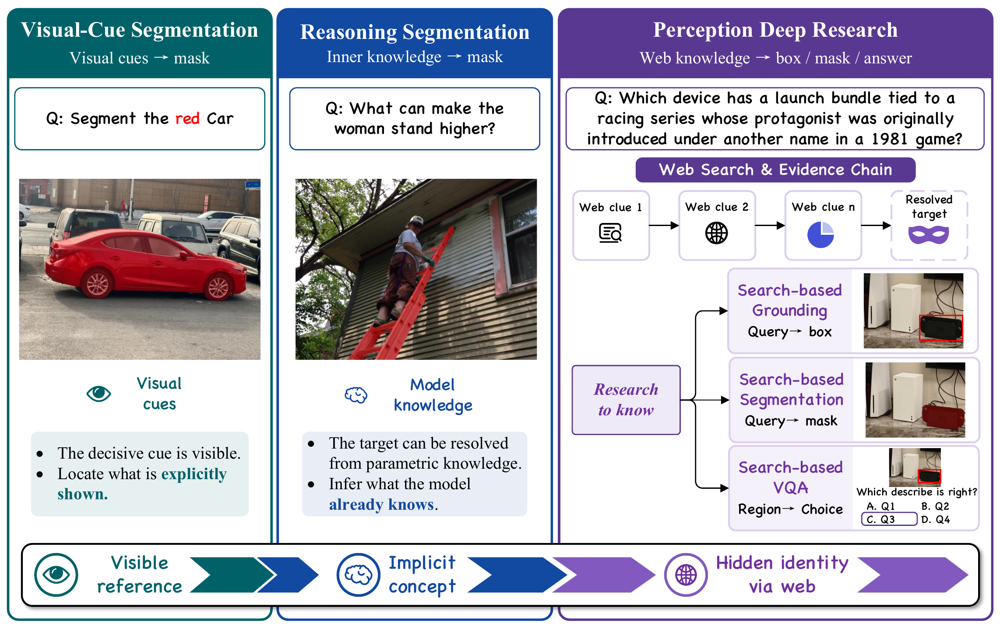
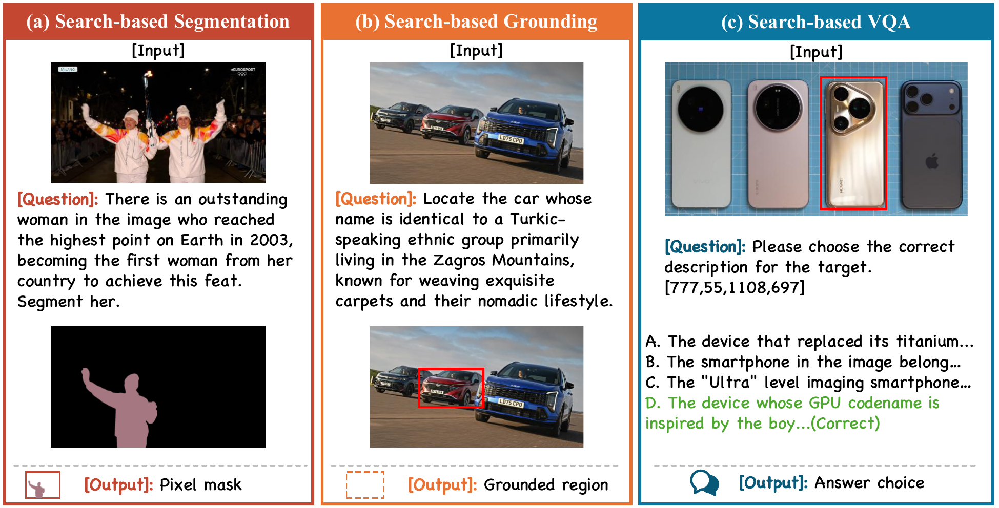
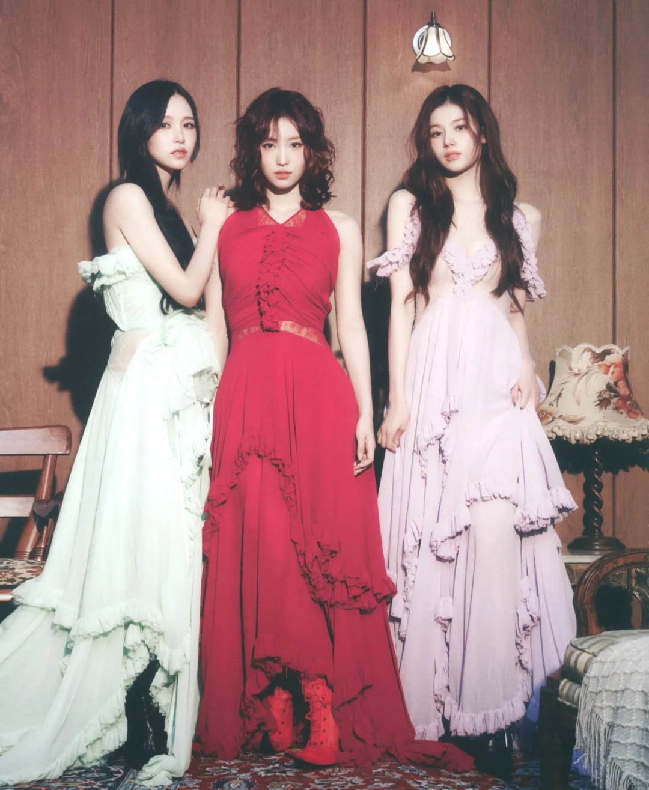

Pixel-Searcher
From Web to Pixels: Bringing Agentic Search into Visual Perception
WebEyes Benchmark · Search-Based Grounding · Segmentation · VQA
What is Pixel-Searcher?
We introduce WebEyes, a benchmark for search-based visual reasoning where the target object cannot be reliably resolved from the image alone. Models must connect visual evidence with external knowledge, then return grounded outputs for object localization, pixel-level segmentation, or target-aware multiple-choice VQA.
Pixel-Searcher is our reference method for this setting. It combines agentic web search, visual target disambiguation, and task-specific prediction formatting, enabling reproducible evaluation across boxes, masks, and answer choices.
Pixel-Searcher Overview
Pixel-Searcher bridges web-scale knowledge with pixel-level visual perception through agentic multi-round search and reasoning.

WebEyes Benchmark
A knowledge-intensive visual reasoning benchmark spanning 6 categories with grounding, segmentation, and VQA tasks.

| Statistics | Count |
|---|---|
| Source images | 120 |
| Object annotations | 473 |
| Grounding rows | 645 |
| Segmentation rows | 645 |
| VQA rows | 637 |
| Total task instances | 1,927 |
Category Distribution
Performance Comparison
Comprehensive evaluation across all three WebEyes tasks. Switch tabs to explore different tasks.
Overall Performance
Category-wise Analysis

BibTeX
@misc{yang2026webpixelsbringingagentic,
title={From Web to Pixels: Bringing Agentic Search into Visual Perception},
author={Bokang Yang and Xinyi Sun and Kaituo Feng and Xingping Dong and Dongming Wu and Xiangyu Yue},
year={2026},
eprint={2605.12497},
archivePrefix={arXiv},
primaryClass={cs.CV},
url={https://arxiv.org/abs/2605.12497},
}